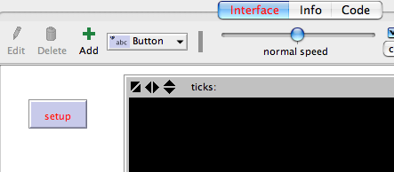
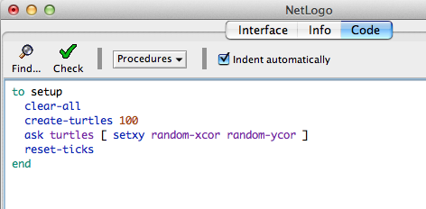
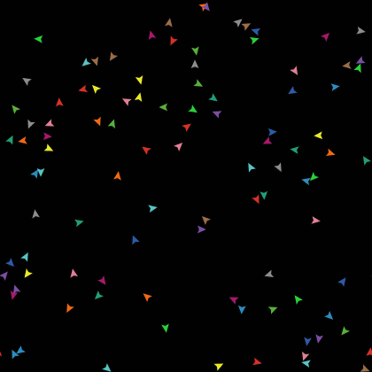
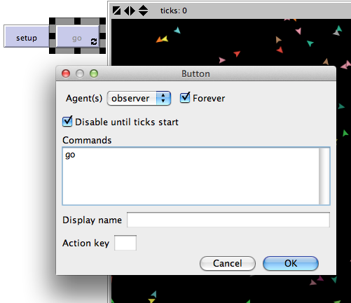
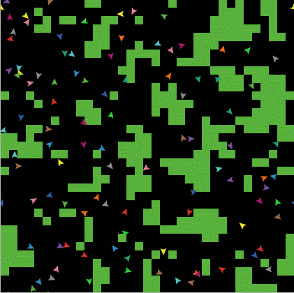
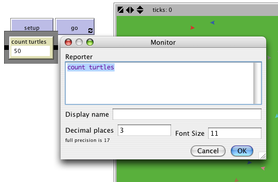
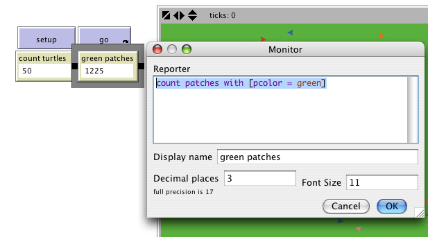
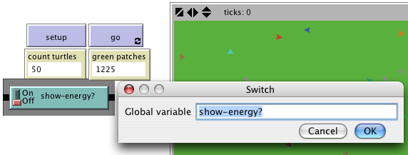
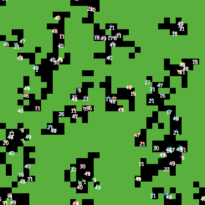
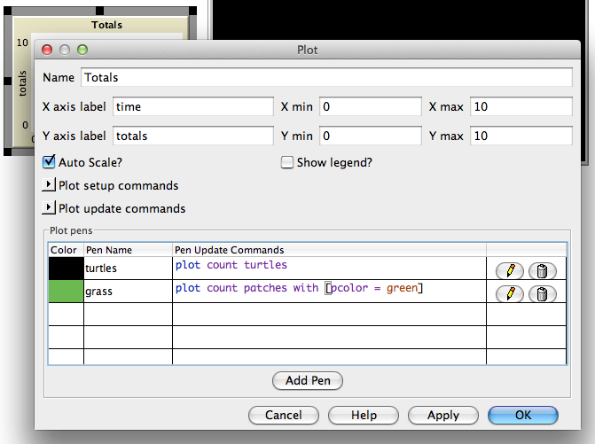

本教程带你一步步建立一个完整的模型,对每一步做出解释。
在教学#2 你学习了怎样使用命令中心和主体监视器查看和修改主体,让他们执行动作。 现在准备进入 NetLogo 模型的真正核心:例程页。
你已经使用了 NetLogo 中可以执行命令的主体类型:瓦片、海龟、链和观察者。瓦片是静止的,组成网格。海龟在网格上移动,链链接两个海龟。观察者俯视在进行的所有事情, 做那些海龟、瓦片和链自己不能做的事情。
所有这四种主体都能执行 NetLogo 命令。前三种主体还能运行例程(procedures)。一 个例程包括一系列 NetLogo 命令,你将它们定义为一个单一的新命令。
你将学习编写例程,让海龟移动、进食、繁殖和死亡。还将学习如何制作监视器、滑动 条和绘图。我们要建立一个简单的生态系统模型,与教学#1 的狼吃羊模型部分相似
要开始一个新模型,在 File 菜单中选择 New。然后从创建一个 setup 按钮开始:
- 在界面页上部的工具条上单击 "Button" 图标。
- 在界面页的空白区域,定位到你想放置按钮的地方单击。
- 编辑按钮的对话框出现了。在标签为"Commands"的文本域中输入setup。
- 按下 OK 按钮,对话框关闭。
现在有了一个 setup 按钮。按下按钮就执行一个名为"setup"的例程。例程就是一系列 的 NetLogo 指令,我们给定一个新名字。现在还没有定义例程(一会就做)。由于按钮指向的例程现在还不存在,按钮变成了红色:

要想看实际的错误信息,单击该按钮。
现在创建"setup"例程,这样错误信息就会消失。
- 切换到 Procedures 页。
- 输入下面的代码：
to setup clear-all create-turtles 100 [ setxy random-xcor random-ycor ] reset-ticks end
做完后,Procedures 页就像下面的样子:

注意每行缩进量不同。多数人觉得代码这样缩进很有用,但这不是强制的,只是使得代码易读易改而已。
例程以 to 开始,以 end结束。所有的例程都要用这两个词开始和结束。
看看你输入了什么,每行是干什么的?
输入完成后,切换到界面页,按下前面制作的 setup 按钮 ,你将看到海龟分散在世界内:

多按 setup 几次,看看海龟的散布有何不同。注意有些海龟会叠压在一起。
稍微想想要达到这样的结果需要做哪些事情。你要在界面页里做一个按钮,还要创建该 按钮要使用的一个例程。只有这两步都做了,按钮才能工作。在本教程的剩余部分,经常需 要做类似两步或更多步,为模型增添新功能。在增加新功能时,当你觉得该做的步骤都完成 了,但就是不能正常工作时,那就继续向前读,看看是否还要其他步骤。读过几节后,返回来看看是否遗漏了某个步骤。
现在我们开始使用计时器(with reset-ticks), 我们应该告诉 NetLogo 只需要每个时间步长更新一次视图而不是连续的更新。
- 找到视图更新菜单，初始值设定为连续型。
- 选择"on ticks" 。
这让你的模型能更快得运行也能有一个连续得画面展示出来（因为更新会在一个持续的时间序列进行）。查看指导手册有更详细得说明。
现在做个 "go"按钮。步骤与 setup 按钮的一样, 除了下面几点:
- 在命令部分输入go 而非 setup。
- 在编辑对话框里勾选 "forever"。
- 也选上 "Disable until ticks start" 。

"forever" 勾选项使得按钮按下后保持按下状态,因此命令会不断重复执行,而不是只 执行一次。
- 在 Procedures 也增加 go 例程:
to go move-turtles tick end
tick是一个原语用来使得计时器跳1步。
move-turtles是什么? 它是一个象clear-all那样的原语(NetLogo内嵌的)吗? 非也,它 是一个需要你添加的例程。至今你已经有两个自己添加的例程了:setup 和go
- 在go例程后面增加move-turtles例程:
to go move-turtles tick end to move-turtles ask turtles [ right random 360 forward 1 ] end
注意move-turtles中间的连字符两侧没空格。教学#2 中用过的red – 2 有空格,是为 了做减法操作。此处我们要的是move-turtles,没空格。 "-" 将 "move" 和"turtles" 组 成一个词。
例程move-turtles中的命令:
为什么我们不把所有这些命令都写在 go 例程里,而是分为几个例程?确实可以这样做, 但是在创建你的项目的过程中,你很可能会增加更多的东西。最好保持 go 例程尽量简单, 这样更容易理解。最后还会包括许多其他的东西,比如计算,画图等。这些事情由相应的例 程完成,每个例程有各自的名字。
界面页中的 go 按钮是永久性的,意味着将不断执行命令,直到你关掉它(重新单击它)。 按下 setup 按钮,创建海龟,然后按下 go 按钮。观察模型。关闭它,你会看到所有海龟停 住了。
注意当海龟越过世界边缘时,它要回绕(wrap),即出现在另外一边。(这是默认行为, 可以改变,详情参加编程指南的Topology 部分。)
我们建议你试试其他海龟命令。
在命令中心输入命令 (如 turtles> set color red), 或在setup, go, move-turtles 中添加命令。
注意在命令中心输入命令时,你必须使用弹出菜单选择turtles>, patches>, or observer>,具体选择取决于哪个主体将执行命令。这就像ask turtles 或 ask patches一 样,只是不用打字而已。你可以使用tab键在主体类型之间切换,这比用菜单更方便。
可以试试在命令中心输入turtles> pen-down,然后按下go 按钮。
在move-turtles例程中,试试将right random 360 改为 right random 45。
玩吧。很容易,并且结果立现 —- 这是 NetLogo 许多优点之一。
试验够了吧,准备继续改进模型。
现在我们有 100 个海龟,它们漫无目的的移动,对周围的事物毫无知觉。下面我们给海龟一个好点的背景,让模型稍微有趣一些。
- 回到setup 例程,修改例程如下:
to setup clear-all setup-patches setup-turtles reset-ticks end- 新的 setup引用了两个新例程,定义 setup-patches :
to setup-patches ask patches [ set pcolor green ] end例程setup-patches将开始时所有瓦片颜色定义为绿色。(海龟的颜色变量是 color，瓦片的 是 pcolor。)
在我们新得 'setup' 中唯一还没有定义的是 setup-turtles。
- 加上这个例程：
to setup-turtles create-turtles 100 ask turtles [ setxy random-xcor random-ycor ] end你是否注意到新的setup-turtles与老的setup包含许多相同的命令?
- 切换回 Interface 页。
- 按下 setup 按钮。
瞧! 由海龟和绿色瓦片构成的 NetLogo 风景 :
看过新setup例程的效果后,你会发现重新读读这个例程很有帮助。
目前海龟在可以地表上移动,但什么都不做。现在在海龟和瓦片之间加上一些交互。
我们让海龟吃“草”(绿色瓦片),繁殖、死亡。草被吃掉后要逐渐恢复。
我们需要一种控制海龟繁殖和死亡的方式。我们通过跟踪海龟有多大能量(energy)来 决定。要这样的话需要增加一个新的海龟变量。
你已经见过一些内置的海龟变量,如color。要添加新的海龟变量,需要在例程页的顶 部加上turtles-own声明,这个声明必须在所有例程之前,变量名为 energy：
turtles-own [energy] to go move-turtles eat-grass tick end
使用这个新定义的变量(energy),允许海龟吃草。
- 切换到代码页，
- 重写 go 进程如下：
to go move-turtles eat-grass tick end- 增加一个 eat-grass 新的进程：
to eat-grass ask turtles [ if pcolor = green [ set pcolor black set energy energy + 10 ] ] end
我们第一次使用if 命令,仔细看看代码。当每个海龟执行这些命令时,比较它所处的 瓦片的颜色(pcolor)与绿色是否相同。(海龟能直接访问所处瓦片的变量),如果瓦片是绿 色则返回true,这时才执行[ ]中的命令(否则跳过)。这些命令让海龟将瓦片改为黑色, 海龟能量值增加 10。瓦片变黑表明该处的草被吃掉,因为吃了草,海龟能量增加。
下面,让海龟移动时消耗一些能量:
- 重写 move-turtles 如下：
to move-turtles ask turtles [ right random 360 forward 1 set energy energy - 1 ] end
当海龟移动时,每步减少 1 个单位的能量。
- 切换到 Interface 页 ,按下 setup 和 go 按钮。
你将看到当海龟走到瓦片上时,瓦片变为黑色。

下面使用工具条在 Interface 页中创建 2 个监视器。(像使用按钮、滑动条一样,使用 工具条上的监视器图标)。先做第一个监视器。
- 使用工具条上的监视器图标,在界面页空白处创建一个监视器。
出现对话框。
- 在对话框中输入：count turtles (如下图)。
- 按OK 按钮关闭对话框。

turtles 是一个"agentset",即所有海龟的集合。count告诉我们这个集合中有多少主体。
制作第二个监视器:
- 使用工具条上的监视器图标,在界面页空白处创建一个监视器。
出现对话框。
- 在对话框的Reporter部分输入:count patches with [pcolor = green] (见下图).
- 在 Display name 部分输入: green patches
- 按 OK 关闭对话框。

此处我们再次使用count 查看一个agentset中有多少主体。patches是所有瓦片的集合, 但我们并不想知道总共有多少瓦片,而是想知道有多少绿色的。这就是with 要做的,它创建 一个较小的agentset,只有满足[ ]中的条件的主体才会包含进来,条件是pcolor = green, 因此得到的是绿色瓦片。
现在有两个监视器报告有多少海龟,有多少绿色瓦片,帮助我们跟踪模型运行。模型运行时,监视器中的数字自动变化。
- 使用 setup 和 go 按钮,观看监视器数值的变化。
海龟不仅是将瓦片变黑,它们还获得、损失能量。模型运行时试试使用海龟监视器查看一个海龟的能量变化。
如果能在任何时候看到所有海龟的能量就更好了。现在就这样做,并且增加一个开关能控制这些额外信息显示与否。
- 在界面页 的工具条上选择开关图标,在空白处单击,创建一个开关。
出现对话框。
- 在对话框的Global variable 部分输入 show-energy? 别忘了包括问号 (见下图)

- 返回“go”例程。
- 重写 eat-grass 例程如下：
to eat-grass ask turtles [ if pcolor = green [ set pcolor black set energy energy + 10 ] ifelse show-energy? [ set label energy ] [ set label "" ] ] end
例程eat-grass 用了ifelse 命令,仔细看代码。每个海龟当运行这些新命令时检查 show-energy?的值(由开关决定)。如果开关打开,比较结果为true,海龟执行第一个[ ] 中的命令。这时将能量值赋给海龟标签。如果比较结果为show-energy?(开关关闭),海龟执行第二 个[ ]中的命令,这时移去文本标签(通过将海龟标签设为空)。
(在 NetLogo 中几个字符称为字符串(string)。字符串是在双引号之间的一串字母和 字符。此处两个双引号之间什么也没有,这是一个空串。如果海龟的标签是空串,就表示没 有任何文本。)
- 测试一下。在界面页中运行模型(使用setup和go),来回拨动show-energy? 开关。
当开关打开时,能看到海龟的能量因吃草而增加,移动时减小。

现在海龟在吃草,再让它们繁殖和死亡,也让草能恢复。现在增加三个例程,分别负责 这三种行为。
- 切换到代码页。
- 重写go 进程如下：
to go move-turtles eat-grass reproduce check-death regrow-grass tick end- 增加例程reproduce check-death,和regrow-grass如下:
to reproduce ask turtles [ if energy > 50 [ set energy energy - 50 hatch 1 [ set energy 50 ] ] ] end to check-death ask turtles [ if energy <= 0 [ die ] ] end to regrow-grass ask patches [ if random 100 < 3 [ set pcolor green ] ] end
这些例程都使用了if 命令。当繁殖时,每个海龟检查它的energy值,如果大于 50 执行 第一个[ ]中的命令。在这里energy减少 50,然后孵出(hatches)一个energy为 50 的新海 龟。
hatch命令是NetLogo的一个原语,形如hatch number [ commands ],海龟创建number 个新海龟,每个都与母体相同,并且请求这些新海龟执行commands,你可以使用commands 让这些新海龟有不同的颜色、方向等。这里运行一条命令,将新海龟的energy设为 50。
当每个海龟运行check-death时,它检查energy是否小于等于 0。如果是真,则海龟被 告知去死die(这是NetLogo的一个原语)。
当每个海龟运行regrow-grass 时,它检查随机产生的 0-99 之间的整数是否小于 3。如 果是,瓦片颜色设为绿。对每个瓦片来说,发生的次数(平均)是 3%,因为在 100 个可能 的数中,有三个数(0,1,2)小于 3。
- 切换到 Interface 页,按下 setup 和 go。
现在能看到模型的一些有趣行为。一些海龟死掉,一些新海龟出现(孵出),一些草恢复。这正是我们要做的。
如果继续看模型的监视器,会发现 count turtles和 green patches 监视器都有振荡。 振荡模式能预测吗?这些变量之间有关系吗?
如果有更容易的跟踪模型行为的方式就更好了。NetLogo 可以为我们画图,这是下面要讲的。
要想画图的话,需要在界面页创建一个 plot,做一些设置。然后在例程页增加一些例程,这些例程为我们更新绘图。
先做例程页中的工作。我们子啊画图里面做的一下命令当我们setup之后调用reset-tick 和tick时是可以自动执行的。
- 在进度条上点击创建画图，选着紧挨着的画笔，然后在页面上点击。
- 设置其名字为： "Totals" (如下图）
- 设置 X 轴坐标为"time"
- 设置Y轴坐标为 "totals"
- 改变画笔得初始值为 "turtles".
- 在画笔更新命令下输入plot count turtles
- 按下 "Add Pen" 按钮。
- 更改新的画笔名称为 "grass".
- 在画笔更新命令下输入plot count patches with [pcolor = green] 。
当你完成的时候，对话框会呈现出这样的图像：

- 在plot对话框中选择OK
注意在创建图的时候,也可设置 X,Y 轴的最大最小值。让"Auto scale?"勾选着,如果图 超过坐标轴的设定范围,坐标轴会自动增长,使你能看到所有数据。
- 再次按 Setup 和 go,运行模型
你会看到模型运行时就能绘图。图的样子与下图相似,尽管可能不完全一样。
记住我们让"Auto scale?"打开。这使得没有空间时,图能自动调整。
如果你忘了哪支笔是干什么的,单击图的右上角处"Show legend?" 标签。
你试试运行模型几次, 看看这些图哪些部分相同哪些不同。
在比较同一模型多次运行得到的图时，如果每次运行长度相同会很有用。学会怎样让模型在特定的时刻停止或启动很有帮助,因为我们可以让模型在同一时刻停止。跟踪 go 例程运行了多少次是实现这一技术的关键。
你已经在你得模型中使用过时钟计数器了，如 reset-ticks和 tick 命令。
你也可以使用时钟计数器做其他得事情，例如在长跑中设置总得长度。
- 更改 go 进程：
to go if ticks >= 500 [ stop ] move-turtles eat-grass check-death reproduce regrow-grass tick end- 按下setup 然后再次运行模型。
图形和模型不会一直运行下去,当界面页工具条上的时钟计数器达到500时,模型自动停止。
tick 命令，时钟计数器加1。 ticks 是一个报告器,返回时钟计数器当前值。每次重新运行 时reset-ticks在 setup 进程中，当重新开始运行的时候，要把计数器设置到0。
首先,可以有可变数量的海龟,而非总是 100 个。
- 增加一个滑动条命名为： "number"。
- 改变最大值或最小值。
- 然后设置 setup-turtles而不是 create-turtles 100 可以设置如下：
to setup-turtles create-turtles number [ setxy random-xcor random-ycor ] end
测试一下。比较初始时刻海龟更多或更少时图的变化.
其次,如果能调整海龟吃草获得的能量和移动时消耗的能量不是更好吗?
- 增加滑动条energy-from-grass。
- 增加滑动条birth-energy。
- 修改eat-grass, 例程：
to eat-grass ask turtles [ if pcolor = green [ set pcolor black set energy (energy + energy-from-grass) ] ifelse show-energy? [ set label energy ] [ set label "" ] ] end- 修改 reproduce：
to reproduce ask turtles [ if energy > birth-energy [ set energy energy - birth-energy hatch 1 [ set energy birth-energy ] ] ] end
最后,如果要改变草的恢复率应该增加什么滑动条?能增加什么海龟移动规则,或让孵化只发生在特定时刻,试着写出来。
现在有了一个简单生态系统模型。瓦片长草,海龟移动、吃草、繁殖、死亡。
你创建了界面,包括按钮、滑动条、开关、监视器和绘图。甚至写了一些例程让海龟做事。
教学到此结束。
如果要看更多的NetLogo文档,界面指南 Interface Guide 让你了解NetLogo所有界面元 素的功能。要写例程,看编程指南 Programming Guide。所有原语在NetLogo词典NetLogo Dictionary。
如果愿意,你还可以继续试验、扩展本模型,试验主体不同的变量和行为。
另外,还可以再看教学#1 的狼吃羊模型。你看到羊走来走去,消耗资源,资源随机补 充,一定条件下繁殖,没有资源时死亡。该模型还有另一类生物—狼。增加狼需要另外的例程及新的原语。狼和羊是两种不同的物种(breeds),研究该模型,了解怎样使用 breeds。
另外,还可以查看其他模型(包括模型库中的 Code Examples),甚至继续建立自己的 模型。你甚至不必建模,只是看着瓦片和海龟形成模式就很有趣,或试着创建个游戏玩玩, 等等。
希望你学到了一些东西,包括 NetLogo 语言及如何建模。上面创建的所有例程列在下面。
这些完整代码在NetLogo模型库里也有,在 CodeExamples 部分,名为 "Tutorial3"。
注意代码有注释,注释由分号开始。使用注释帮助你理解模型。
在例程页,注释是灰的,容易区别。
turtles-own [energy] ;; for keeping track of when the turtle is ready
;; to reproduce and when it will die
to setup
clear-all
setup-patches
setup-turtles
reset-ticks
end
to setup-patches
ask patches [ set pcolor green ]
end
to setup-turtles
create-turtles number ;; uses the value of the number slider to create turtles
ask turtles [ setxy random-xcor random-ycor ]
end
to go
if ticks >= 500 [ stop ] ;; stop after 500 ticks
move-turtles
eat-grass
check-death
reproduce
regrow-grass
tick ;; increase the tick counter by 1 each time through
end
to move-turtles
ask turtles [
right random 360
forward 1
set energy energy - 1 ;; when the turtle moves it looses one unit of energy
]
end
to eat-grass
ask turtles [
if pcolor = green [
set pcolor black
;; the value of energy-from-grass slider is added to energy
set energy energy + energy-from-grass
]
ifelse show-energy?
[ set label energy ] ;; the label is set to be the value of the energy
[ set label "" ] ;; the label is set to an empty text value
]
end
to reproduce
ask turtles [
if energy > birth-energy [
set energy energy - birth-energy ;; take away birth-energy to give birth
hatch 1 [ set energy birth-energy ] ;; give this birth-energy to the offspring
]
]
end
to check-death
ask turtles [
if energy <= 0 [ die ] ;; removes the turtle if it has no energy left
]
end
to regrow-grass
ask patches [ ;; 3 out of 100 times, the patch color is set to green
if random 100 < 3 [ set pcolor green ]
]
end